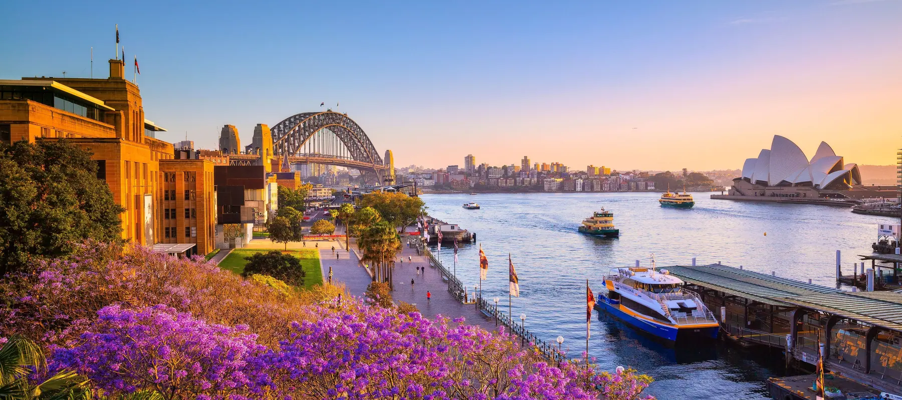
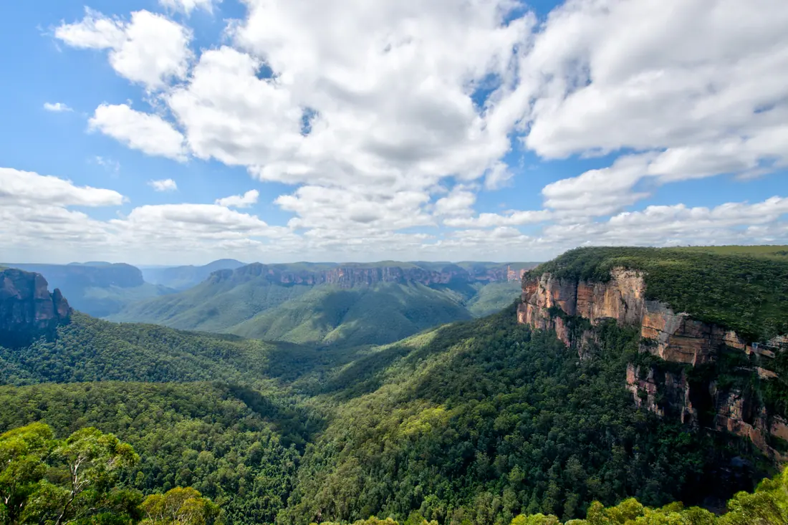
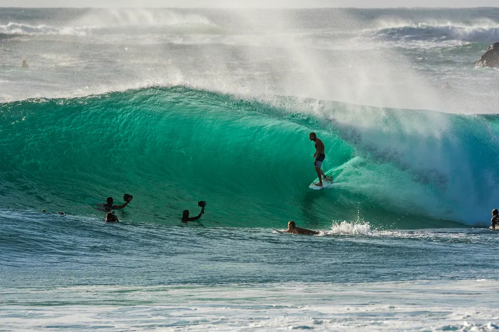

<meta charset="utf-8">
<meta name="viewport" content="width=device-width, initial-scale=1">
<!-- Consent, EEA and UK. Must run before gtag.js so defaults are set first. -->
<script>
  window.dataLayer = window.dataLayer || [];
  function gtag(){dataLayer.push(arguments);}
  // Region-scoped default first, then the global fallback, per Google's order.
  // Google resolves the visitor's region itself, server side, so analytics is
  // held in denied mode across the EEA and the UK whatever the banner does or
  // does not manage to show.
  gtag('consent','default',{
    'ad_storage':'denied','ad_user_data':'denied','ad_personalization':'denied',
    'analytics_storage':'denied','wait_for_update':500,
    'region':['AT','BE','BG','HR','CY','CZ','DK','EE','FI','FR','DE','GR','HU','IE','IT','LV','LT','LU','MT','NL','PL','PT','RO','SK','SI','ES','SE','IS','LI','NO','GB']
  });
  gtag('consent','default',{
    'ad_storage':'denied','ad_user_data':'denied','ad_personalization':'denied',
    'analytics_storage':'granted'
  });
  (function(){
    var KEY='ib-analytics-consent';
    function get(){try{return localStorage.getItem(KEY);}catch(e){return null;}}
    function set(v){try{localStorage.setItem(KEY,v);}catch(e){}}
    var saved=get();
    if(saved==='granted'){gtag('consent','update',{'analytics_storage':'granted'});}
    function asks(){
      // Timezone, not an IP lookup: no third party, no request, nothing stored.
      // Over-asking is harmless; under-asking is covered by the region rule above.
      try{
        var tz=(Intl.DateTimeFormat().resolvedOptions().timeZone)||'';
        return /^Europe\//.test(tz)||/^Atlantic\/(Reykjavik|Canary|Madeira|Azores|Faroe)/.test(tz);
      }catch(e){return true;}
    }
    if(saved||!asks())return;
    function build(){
      var css=document.createElement('style');
      css.textContent=
      '.ibc{position:fixed;left:0;right:0;bottom:0;z-index:70;background:var(--paper,#F6F1E9);'+
      'border-top:1px solid var(--rule,rgba(22,48,61,.16));box-shadow:0 -12px 32px -24px rgba(22,48,61,.55);'+
      'transform:translateY(100%);transition:transform 260ms cubic-bezier(.23,1,.32,1)}'+
      '.ibc.ibc-in{transform:none}'+
      '.ibc-w{max-width:1500px;margin-inline:auto;padding:clamp(.95rem,2.4vh,1.25rem) clamp(1.35rem,4.6vw,5rem);'+
      'display:flex;align-items:center;justify-content:space-between;gap:clamp(.9rem,2.5vw,2.2rem);flex-wrap:wrap}'+
      '.ibc p{margin:0;color:var(--ink-2,#3B5666);font-size:1rem;line-height:1.55;max-width:64ch}'+
      '.ibc-b{display:flex;align-items:center;gap:1.15rem;flex-shrink:0}'+
      '.ibc button{font-family:var(--f-mono,ui-monospace,Menlo,monospace);text-transform:uppercase;'+
      'font-size:.74rem;letter-spacing:.14em;cursor:pointer;white-space:nowrap;'+
      'transition:transform 200ms cubic-bezier(.23,1,.32,1),box-shadow 200ms ease,color 160ms ease}'+
      '.ibc-y{background:var(--gold,#E8A317);color:#20160A;border:0;border-radius:999px;padding:.72rem 1.3rem;'+/* the gold pill sits on paper, where its own edge measures 1.93:1, under the 3:1 a control boundary needs. A hairline in the gold's dark shade takes it to 6.0:1 against the paper and 3.1:1 against the fill. */'box-shadow:0 0 0 1.5px rgba(35,26,8,.7)}'+
      '.ibc-n{background:none;border:0;color:var(--ink,#16303D);padding:.72rem .1rem;'+
      'border-bottom:1px solid var(--rule,rgba(22,48,61,.16))}'+
      '@media (hover:hover) and (pointer:fine){'+
      '.ibc-y:hover{transform:translateY(-1px);box-shadow:0 12px 26px -16px rgba(35,26,8,.6)}'+
      '.ibc-n:hover{color:var(--ocean,#0E5E7C)}}'+
      '.ibc button:active{transform:scale(.97)}'+
      '.ibc button:focus-visible{outline:2px solid var(--ocean,#0E5E7C);outline-offset:3px;border-radius:3px}'+
      '@media (max-width:700px){.ibc-w{align-items:flex-start;flex-direction:column;gap:.9rem}'+
      '.ibc p{font-size:.95rem}}'+
      '@media (prefers-reduced-motion:reduce){.ibc{transition:none}}';
      document.head.appendChild(css);
      var bar=document.createElement('div');
      bar.className='ibc';bar.setAttribute('role','region');
      bar.setAttribute('aria-label','Analytics consent');
      bar.innerHTML='<div class="ibc-w"><p>This site uses Google Analytics to see which pages people '+
        'find useful. Nothing else, and nothing that identifies you.</p>'+
        '<div class="ibc-b"><button class="ibc-y" type="button">Accept</button>'+
        '<button class="ibc-n" type="button">Decline</button></div></div>';
      document.body.appendChild(bar);
      requestAnimationFrame(function(){requestAnimationFrame(function(){bar.classList.add('ibc-in');});});
      function close(choice){
        set(choice);
        if(choice==='granted'){gtag('consent','update',{'analytics_storage':'granted'});}
        bar.classList.remove('ibc-in');
        setTimeout(function(){bar.remove();},280);
      }
      bar.querySelector('.ibc-y').addEventListener('click',function(){close('granted');});
      bar.querySelector('.ibc-n').addEventListener('click',function(){close('denied');});
    }
    if(document.readyState==='loading')document.addEventListener('DOMContentLoaded',build);
    else build();
  })();
</script>
<!-- Google tag (gtag.js) -->
<script async src="https://www.googletagmanager.com/gtag/js?id=G-K8VQ31CZMP"></script>
<script>
  window.dataLayer = window.dataLayer || [];
  function gtag(){dataLayer.push(arguments);}
  gtag('js', new Date());

  gtag('config', 'G-K8VQ31CZMP');
</script>
<title>Sydney, New South Wales - Ironbark Advisory</title>
<meta name="description" content="Studying in Sydney: the universities in New South Wales, what it costs to live there, the climate, the flight from Dubai and what graduates do next.">
<link rel="icon" href="/favicon.svg" type="image/svg+xml">
<link rel="icon" href="/favicon.ico" sizes="32x32">
<link rel="apple-touch-icon" href="/apple-touch-icon.png">
<meta property="og:type" content="website">
<meta property="og:site_name" content="Ironbark Advisory">
<meta property="og:title" content="Sydney, New South Wales">
<meta property="og:url" content="https://ironbarkadvisory.ae/why-australia-sydney.html">
<meta property="og:image" content="https://ironbarkadvisory.ae/img/states/sydney-hero.webp">
<meta property="og:image:width" content="1200">
<meta property="og:image:height" content="630">
<meta name="twitter:card" content="summary_large_image">
<link rel="preconnect" href="https://fonts.googleapis.com">
<link rel="preconnect" href="https://fonts.gstatic.com" crossorigin>
<link rel="stylesheet" href="https://fonts.googleapis.com/css2?family=Archivo:wdth,wght@62..125,100..900&family=IBM+Plex+Mono:wght@400;500&family=Inter:wght@300..700&display=swap">
<style>
/* ============================================================
   IRONBARK ADVISORY — home
   Archivo (two axis settings) + Inter + IBM Plex Mono.
   Photographs ACES-graded at build time.
   The page scrolls; two rails pin, and the Dubai plate is
   overtaken by the section that follows it.
   ============================================================ */
:root{
  --paper:#F6F1E9; --paper-2:#EDE6DA; --card:#FCFAF5;
  --deep:#0E2029; --on-deep:#F0EAE0; --on-deep-2:#A9BDC6;
  --ink:#16303D; --ink-2:#3B5666; --muted:#4B626F; --kick:#274054;
  --ocean:#0E5E7C; --sun:#8A5008; --gold:#E8A317;
  --rule:rgba(22,48,61,.16); --rule-2:rgba(22,48,61,.08);
  --f-display:"Archivo","Helvetica Neue",Arial,sans-serif;
  --f-body:"Inter",-apple-system,"Segoe UI",sans-serif;
  --f-mono:"IBM Plex Mono",ui-monospace,Menlo,monospace;
  --vs-head:"wdth" 116,"wght" 700;
  --vs-sub:"wdth" 100,"wght" 600;
  --gut:clamp(1.35rem,4.6vw,5rem); --stack:clamp(4rem,11vh,8rem);
  --ease:cubic-bezier(.22,.9,.3,1);
}
*,*::before,*::after{box-sizing:border-box}
html{-webkit-text-size-adjust:100%;overflow-x:clip;scroll-behavior:smooth}
body{margin:0;background:var(--paper);color:var(--ink);font-family:var(--f-body);
  font-size:clamp(1.16rem,1.25vw,1.28rem);line-height:1.68;overflow-x:clip}
p{margin:0}img{display:block;max-width:100%}
::selection{background:var(--ocean);color:var(--paper)}
:focus-visible{outline:2px solid var(--ocean);outline-offset:4px;border-radius:3px}
.wrap{width:100%;max-width:1500px;margin-inline:auto;padding-inline:var(--gut)}
.label{font-family:var(--f-mono);font-size:.82rem;text-transform:uppercase;letter-spacing:.18em;color:var(--kick);margin:0}
.label--m{color:var(--muted)}
.h-head{font-family:var(--f-display);font-variation-settings:var(--vs-head);font-weight:700;
  line-height:1.02;letter-spacing:-.02em;margin:0;text-wrap:balance}
.h-sub{font-family:var(--f-display);font-variation-settings:var(--vs-sub);font-weight:600;
  line-height:1.08;letter-spacing:-.014em;margin:0;text-wrap:balance}
h2.sec{font-size:clamp(1.55rem,3.1vw,2.6rem);margin-top:.55rem}
.lead{font-size:clamp(1.2rem,1.38vw,1.35rem);font-weight:400;color:var(--ink-2);line-height:1.55;max-width:52ch;margin:0}

.rev{display:block;overflow:hidden}
.rev>*{display:block;transform:translateY(108%);opacity:0;
  transition:transform 1.05s var(--ease) var(--d,0ms),opacity .8s ease var(--d,0ms)}
.in .rev>*,.rev.in>*{transform:none;opacity:1}
.fade{opacity:0;transform:translateY(18px);
  transition:opacity .9s ease var(--d,0ms),transform 1s var(--ease) var(--d,0ms)}
.in .fade,.fade.in{opacity:1;transform:none}

/* ---------- masthead ---------- */
.masthead{position:fixed;top:0;left:0;right:0;z-index:60;display:flex;align-items:center;justify-content:space-between;
  gap:1rem;padding:1.1rem var(--gut);border-bottom:0;
  background:rgba(246,241,233,.26);
  -webkit-backdrop-filter:blur(18px) saturate(135%);backdrop-filter:blur(18px) saturate(135%);
  transition:background .45s ease,padding .5s var(--ease),color .45s ease}
.masthead.docked{background:rgba(246,241,233,.42);padding-block:.68rem}
/* over the dark panels the glass and the type both invert, or the text disappears */
.masthead.on-dark{background:rgba(12,28,36,.40)}
.masthead.on-dark .brand{color:var(--on-deep)}
.masthead.on-dark .brand{--brand-sub:var(--on-deep-2)}
.masthead.on-dark .book{color:#20160A}
@supports not ((backdrop-filter:blur(1px)) or (-webkit-backdrop-filter:blur(1px))){
  /* no blur support: fall back to a more opaque bar so the text still holds */
  .masthead{background:rgba(246,241,233,.86)}
  .masthead.on-dark{background:rgba(12,28,36,.86)}
}
/* One lockup everywhere. The stacked SVG with its type already outlined, so
   the bar never waits on Archivo and the weights can never drift from the
   master file. The name takes currentColor and flips with the section; the
   second word rides --brand-sub; the gold is fixed in the artwork. */
@property --brand-sub{syntax:"<color>";inherits:true;initial-value:#3B5666}
.brand{display:block;line-height:0;text-decoration:none;color:var(--ink);
  --brand-sub:var(--ink-2);transition:color .45s ease,--brand-sub .45s ease}
/* height drives everything - the lockup has a fixed 5.98:1 ratio */
.brand svg{display:block;height:clamp(30px,3vw,36px);width:auto}
.brand .mark-only{display:none}
/* a CSS declaration beats the presentation attribute, and unlike the
   attribute it resolves var() in every browser, not just recent ones */
.brand .lockup .sub{fill:var(--brand-sub)}
@media (max-width:700px){.brand .lockup{height:clamp(26px,4.4vw,32px)}}
/* Below 375px the bar cannot hold the wordmark: the lockup wants 155px next
   to a 119px pill and a 38px burger, inside 16px gutters. Drop to the mark,
   which is the documented form once there is no room for type - a 6px
   "Advisory" would read as a smudge, not a word. */
@media (max-width:440px){.masthead{padding-inline:1rem;gap:.75rem}}
@media (max-width:374px){
  .masthead .brand .lockup{display:none}
  .masthead .brand .mark-only{display:block;height:28px;width:28px}
}
/* ---------- one button, used everywhere on the page ----------
   Gold is the brand accent and booking a call is the only conversion action,
   so every call to action carries the same pill. Hover fills it from the left
   in the gold's own dark shade and turns the label gold. */
.book,.card .btn,.cta{position:relative;isolation:isolate;overflow:hidden;white-space:nowrap;
  font-family:var(--f-mono);text-transform:uppercase;text-decoration:none;
  background:var(--gold);color:#20160A;border:0;border-radius:999px;
  /* UI feedback belongs under 300ms. These were 450-550ms, which reads as lag on
     the one control that converts. Press is faster still: slow where the user is
     deciding, fast where the system is responding. */
  transition:transform 200ms var(--ease),box-shadow 200ms var(--ease),color 160ms ease}
.book::after,.card .btn::after,.cta::after{content:"";position:absolute;inset:0;z-index:-1;
  background:#231A08;transform:scaleX(0);transform-origin:left center;
  transition:transform 260ms var(--ease)}
/* a button that does not acknowledge the press does not feel like it heard you */
.book:active,.card .btn:active,.cta:active{transform:scale(.97);transition-duration:120ms}
/* touch devices fire :hover on tap, so the lift must be gated behind a real pointer */
@media (hover:none){.book:hover,.card .btn:hover,.cta:hover{transform:none;box-shadow:none}}
.book:hover,.book:focus-visible,.card .btn:hover,.cta:hover,.cta:focus-visible,
.card:hover .btn,.card .btn:focus-visible{color:var(--gold);transform:translateY(-2px);
  box-shadow:0 14px 28px -16px rgba(35,26,8,.55)}
.book:hover::after,.book:focus-visible::after,.card .btn:hover::after,.cta:hover::after,
.cta:focus-visible::after,.card:hover .btn::after,.card .btn:focus-visible::after{transform:scaleX(1)}
.book{font-size:.80rem;letter-spacing:.14em;padding:.58rem 1rem}
.book-short{display:none}
@media (max-width:700px){.book{font-size:.76rem;padding:.52rem .82rem;letter-spacing:.09em}
  /* the full label will not fit beside the menu button on a phone */
  .book-long{display:none}.book-short{display:inline}}

/* ---------- primary navigation ---------- */
.brand,.burger,.book{position:relative;z-index:2}
.mast-nav{display:flex;align-items:center;gap:clamp(1.1rem,2.3vw,2.1rem);margin-left:auto}
.nav{display:flex;align-items:center;gap:clamp(.95rem,1.85vw,1.75rem)}
.nav a{position:relative;font-family:var(--f-mono);font-size:clamp(.78rem,.82vw,.86rem);
  letter-spacing:.13em;text-transform:uppercase;text-decoration:none;color:var(--ink-2);
  white-space:nowrap;padding-block:.4rem;transition:color .35s ease}
/* the rule grows from the left rather than blinking on */
.nav a::after{content:"";position:absolute;left:0;right:0;bottom:.06rem;height:1px;background:currentColor;
  opacity:.5;transform:scaleX(0);transform-origin:left;transition:transform .5s var(--ease)}
.nav a:hover,.nav a:focus-visible{color:var(--ink)}
.nav a:hover::after,.nav a:focus-visible::after{transform:scaleX(1)}
.nav a[aria-current="page"]{color:var(--ink)}
.nav a[aria-current="page"]::after{transform:scaleX(1);opacity:.28}
.mast-act{display:flex;align-items:center;gap:.8rem}
.ln{display:grid;place-items:center;width:2rem;height:2rem;border-radius:999px;color:var(--ink-2);
  transition:color .35s ease,background .35s ease}
.ln svg{width:17px;height:17px;fill:currentColor}
.ln-word{display:none}
.ln:hover{color:var(--ink);background:rgba(22,48,61,.07)}

/* over the dark panels the links invert with the rest of the bar */
.masthead.on-dark .nav a{color:var(--on-deep-2)}
.masthead.on-dark .nav a:hover,.masthead.on-dark .nav a:focus-visible,
.masthead.on-dark .nav a[aria-current="page"]{color:var(--on-deep)}
.masthead.on-dark .ln{color:var(--on-deep-2)}
.masthead.on-dark .ln:hover{color:var(--on-deep);background:rgba(240,234,224,.12)}
.masthead.on-dark .burger .bar{background:var(--on-deep)}

.burger{display:none;width:2.4rem;height:2.4rem;padding:0;margin-left:auto;border:0;background:none;
  cursor:pointer;align-items:center;justify-content:center}
.burger .bar{position:absolute;left:.5rem;right:.5rem;height:1.5px;border-radius:2px;background:var(--ink);
  transition:transform .5s var(--ease),opacity .28s ease,background .45s ease}
.burger .bar:nth-child(1){transform:translateY(-.35rem)}
.burger .bar:nth-child(3){transform:translateY(.35rem)}
.burger[aria-expanded="true"] .bar:nth-child(1){transform:rotate(45deg)}
.burger[aria-expanded="true"] .bar:nth-child(2){opacity:0}
.burger[aria-expanded="true"] .bar:nth-child(3){transform:rotate(-45deg)}

/* ---------- below 1150 the links fold into a drawer ---------- */
@media (max-width:1150px){
  /* the drawer leaves the flow, so the pill and the menu button reorder around it */
  .burger{display:flex;order:3;margin-left:.55rem}
  .book{order:2;margin-left:auto}
  .mast-nav{position:fixed;top:0;left:0;right:0;z-index:1;margin:0;display:block;
    padding:clamp(5rem,13vh,6.2rem) var(--gut) clamp(2rem,6vh,3rem);
    max-height:100svh;overflow-y:auto;overscroll-behavior:contain;
    /* Opaque, not glass. A backdrop-filter nested inside another one does
       not filter the page behind it - the masthead already has one, so the
       drawer's blur never landed and the page read straight through it on
       iOS Safari. Verified in the simulator: standalone it was clean,
       nested it bled. */
    background:var(--paper);border-bottom:1px solid var(--rule-2);
    clip-path:inset(0 0 100% 0);opacity:0;visibility:hidden;
    transition:clip-path .62s var(--ease),opacity .3s ease,visibility 0s linear .62s}
  .masthead.nav-open .mast-nav{clip-path:inset(0 0 0 0);opacity:1;visibility:visible;
    transition:clip-path .62s var(--ease),opacity .3s ease,visibility 0s}
  .masthead.on-dark .mast-nav{background:#0C1C24;border-bottom-color:rgba(240,234,224,.14)}
  .nav{display:block}
  /* in the drawer they read as headings, not as labels */
  .nav a{display:block;font-family:var(--f-display);font-variation-settings:var(--vs-sub);font-weight:600;
    font-size:clamp(1.42rem,6.2vw,1.95rem);line-height:1.1;letter-spacing:-.014em;text-transform:none;
    color:var(--ink);padding-block:.6rem;border-bottom:1px solid var(--rule-2);
    opacity:0;transform:translateY(14px);
    transition:opacity .5s ease var(--d,0ms),transform .6s var(--ease) var(--d,0ms),color .35s ease}
  .masthead.nav-open .nav a{opacity:1;transform:none}
  .nav a::after{display:none}
  .nav a:nth-child(2){--d:60ms}.nav a:nth-child(3){--d:120ms}
  .nav a:nth-child(4){--d:180ms}.nav a:nth-child(5){--d:240ms}
  .masthead.on-dark .nav a{color:var(--on-deep);border-bottom-color:rgba(240,234,224,.14)}
  .mast-act{margin-top:clamp(1.4rem,4vh,2rem);
    opacity:0;transform:translateY(14px);
    transition:opacity .5s ease 300ms,transform .6s var(--ease) 300ms}
  .masthead.nav-open .mast-act{opacity:1;transform:none}
  .ln{display:inline-flex;align-items:center;gap:.7rem;width:auto;height:auto;padding:.5rem 0;border-radius:0}
  .ln:hover{background:none}
  .ln-word{display:inline;font-family:var(--f-mono);font-size:.80rem;letter-spacing:.15em;text-transform:uppercase}
  body.nav-lock{overflow:hidden}
}

/* ---------- close ---------- */
.close{position:relative;overflow:hidden;isolation:isolate;background:var(--deep);color:var(--on-deep);
  min-height:min(92svh,820px);display:flex;align-items:center;padding-block:var(--stack)}
.close img{position:absolute;inset:0;width:100%;height:100%;object-fit:cover;z-index:-2;opacity:.5}
.close::after{content:"";position:absolute;inset:0;z-index:-1;
  background:linear-gradient(to right,rgba(14,32,41,.94) 0%,rgba(14,32,41,.8) 48%,rgba(14,32,41,.6) 100%)}
.close .label{color:var(--gold)}
.close h2{font-size:clamp(1.72rem,3.6vw,3rem);margin:.7rem 0 0;max-width:15ch;color:var(--on-deep)}
.close p.lead{color:var(--on-deep-2);margin-top:1.1rem;max-width:48ch}
.close-row{display:flex;flex-wrap:wrap;gap:.9rem 1.5rem;align-items:center;margin-top:clamp(1.6rem,4vh,2.4rem)}
.cta{display:inline-flex;align-items:center;gap:.8rem;font-size:.84rem;letter-spacing:.16em;padding:1rem 1.6rem}
.alt{font-family:var(--f-mono);font-size:.80rem;letter-spacing:.14em;text-transform:uppercase;color:var(--on-deep-2);
  text-decoration:none;border-bottom:1px solid rgba(240,234,224,.35);padding-bottom:.18rem;transition:color .35s ease,border-color .35s ease}
.alt:hover{color:var(--gold);border-color:var(--gold)}

footer{background:var(--deep);color:var(--on-deep-2);padding-block:clamp(2.2rem,6vh,3.5rem);border-top:1px solid rgba(240,234,224,.12)}
.foot{display:grid;grid-template-columns:minmax(0,1.1fr) minmax(0,1fr);gap:clamp(2rem,6vw,5rem);align-items:start}
.foot-brand .brand{color:var(--on-deep)}
.foot-brand .brand{--brand-sub:var(--on-deep-2)}
.foot-brand .brand svg{height:42px}
.foot-brand p{margin-top:1.05rem;max-width:32ch;color:var(--on-deep-2);font-size:1.06rem}
.foot-cols{display:grid;grid-template-columns:repeat(auto-fit,minmax(150px,1fr));gap:1.8rem}
/* hello@ironbarkadvisory.ae is a single unbreakable 210px token. Two columns
   need ~492px of viewport to hold it; below that the address was clipped by the
   page's overflow-x:clip, so it silently lost its last characters on a phone. */
@media (max-width:520px){.foot-cols{grid-template-columns:1fr}}
.foot ul{overflow-wrap:break-word}
@media (max-width:760px){.foot{grid-template-columns:1fr;gap:2.2rem}}
.foot h5{font-family:var(--f-mono);font-size:.78rem;letter-spacing:.16em;text-transform:uppercase;color:#8CA3AD;margin:0 0 .75rem;font-weight:400}
.foot ul{list-style:none;margin:0;padding:0;display:grid;gap:.45rem;font-size:1.1rem;font-weight:400}
.foot a{color:var(--on-deep-2);text-decoration:none;transition:color .3s ease}
.foot a:hover{color:var(--gold)}
.colophon{margin-top:2.2rem;padding-top:1rem;border-top:1px solid rgba(240,234,224,.12);display:flex;flex-wrap:wrap;
  gap:.6rem 1.8rem;justify-content:space-between;font-family:var(--f-mono);font-size:.74rem;letter-spacing:.11em;
  text-transform:uppercase;color:#8CA3AD}

@media (prefers-reduced-motion:reduce){
  *,*::before,*::after{animation-duration:.001ms!important;transition-duration:.001ms!important;scroll-behavior:auto!important}
  .rev>*{transform:none;opacity:1}.fade{opacity:1;transform:none}
}
</style>
<noscript><style>.rev>*{transform:none;opacity:1}.fade{opacity:1;transform:none}
</style></noscript>
<style>
/* ============================================================
   STATE PAGES — one template, eight states.
   Everything above this comes from the shared stylesheet; what
   follows belongs to these pages alone.
   ============================================================ */

/* ---------- hero: the photograph, then the name on paper ---------- */
.sh{position:relative;isolation:isolate;overflow:hidden;background:var(--deep);
  min-height:min(82svh,760px);display:flex;align-items:flex-end;
  padding-top:clamp(6rem,14vh,8rem);padding-bottom:clamp(1.8rem,5vh,3.2rem)}
.sh img{position:absolute;inset:0;width:100%;height:100%;object-fit:cover;z-index:-2;
  transform:scale(1.06)}
.sh.in img{transform:none;transition:transform 2.4s var(--ease)}
.sh::after{content:"";position:absolute;inset:0;z-index:-1;pointer-events:none;
  background:linear-gradient(to top,rgba(6,18,24,.92) 0%,rgba(6,18,24,.72) 26%,
    rgba(6,18,24,.34) 52%,rgba(6,18,24,.06) 78%,rgba(6,18,24,0) 100%)}
.sh .label{color:var(--gold)}
.sh h1{font-size:clamp(2.4rem,8vw,6.4rem);line-height:.92;letter-spacing:-.035em;
  margin:.5rem 0 0;color:#FBFDFD}
.sh .state-of{font-family:var(--f-display);font-variation-settings:var(--vs-sub);font-weight:600;
  font-size:clamp(1.05rem,2vw,1.6rem);letter-spacing:-.01em;color:#C6D6DD;margin:.5rem 0 0}
.sh p.lead{color:#D5E2E8;max-width:44ch;margin-top:clamp(.9rem,2.4vh,1.4rem)}
.sh-back{display:inline-flex;align-items:center;gap:.55rem;margin-top:clamp(1.1rem,3vh,1.7rem);
  font-family:var(--f-mono);font-size:.74rem;letter-spacing:.14em;text-transform:uppercase;
  text-decoration:none;color:#B9CCD4;border-bottom:1px solid rgba(240,234,224,.3);padding-bottom:.25rem;
  transition:color .3s ease,border-color .3s ease}
.sh-back:hover{color:var(--gold);border-color:var(--gold)}

/* ---------- the numbers strip ---------- */
.glance{padding-block:clamp(2.2rem,6vh,3.6rem);background:var(--paper-2)}
.glance-grid{display:grid;grid-template-columns:repeat(auto-fit,minmax(190px,1fr));
  gap:clamp(1.2rem,3vw,2.6rem)}
.gl{border-top:1px solid var(--rule);padding-top:1rem}
.gl dt{font-family:var(--f-mono);font-size:.72rem;letter-spacing:.15em;text-transform:uppercase;
  color:var(--ocean);margin:0 0 .45rem}
.gl dd{margin:0;font-family:var(--f-display);font-variation-settings:"wdth" 96,"wght" 700;
  font-weight:700;font-size:clamp(1.5rem,2.6vw,2.2rem);line-height:1;letter-spacing:-.025em;
  font-variant-numeric:tabular-nums}
.gl dd small{font-size:.44em;letter-spacing:.02em;color:var(--muted);margin-left:.3em;
  font-variation-settings:"wdth" 100,"wght" 600}
.gl p{margin:.55rem 0 0;color:var(--ink-2);font-size:1.02rem}

/* ---------- the map ----------
   One drawing, two views. The polygons scale inside .cam; the dots and the
   type sit in .marks, which is translated rather than magnified, so a label
   is the same size whichever view you are looking at. The whole thing is
   clipped, which is what stops a label from wandering into the next column
   the way the old pair of maps did. */
.atlas{padding-block:var(--stack)}
.atlas-grid{display:grid;grid-template-columns:minmax(0,.62fr) minmax(0,1fr);
  gap:clamp(1.6rem,4vw,3.4rem);align-items:center}
@media (max-width:900px){.atlas-grid{grid-template-columns:1fr;gap:1.8rem}}
.atlas-side h2{max-width:16ch;margin-top:.5rem}
.atlas-note{color:var(--ink-2);max-width:38ch;margin:1rem 0 0}
.view-toggle{display:flex;gap:.4rem;margin-top:clamp(1.2rem,3vh,1.8rem)}
.view-toggle button{font-family:var(--f-mono);font-size:.72rem;letter-spacing:.13em;text-transform:uppercase;
  background:none;color:var(--ink-2);border:1px solid var(--rule);border-radius:999px;
  padding:.5rem .95rem;cursor:pointer;white-space:nowrap;
  transition:border-color .3s ease,color .3s ease,background .3s ease}
.view-toggle button:hover{border-color:var(--ocean);color:var(--ocean)}
.view-toggle button[aria-pressed="true"]{border-color:var(--gold);background:rgba(232,163,23,.14);color:var(--ink)}
.atlas-foot{display:flex;align-items:center;gap:clamp(1rem,2.4vw,1.8rem);flex-wrap:wrap;
  margin-top:clamp(1.2rem,3vh,1.8rem);padding-top:clamp(.9rem,2.2vh,1.3rem);border-top:1px solid var(--rule-2)}
.key{display:flex;align-items:center;gap:.55rem;font-family:var(--f-mono);font-size:.72rem;
  letter-spacing:.13em;text-transform:uppercase;color:var(--muted);margin:0}
.key i{display:block;width:10px;height:10px;border-radius:50%;background:var(--ocean)}
.key.gold i{background:var(--gold)}

.atlas-map{position:relative;overflow:hidden;border-radius:16px;background:var(--paper-2);
  border:1px solid var(--rule-2);padding:clamp(.6rem,1.6vw,1.4rem)}
.atlas-map svg{display:block;width:100%;height:auto;overflow:hidden}
.atlas-foot{display:flex;align-items:center;gap:clamp(1rem,3vw,2.2rem);flex-wrap:wrap;margin-top:1rem}
.key{display:flex;align-items:center;gap:.55rem;font-family:var(--f-mono);font-size:.72rem;
  letter-spacing:.13em;text-transform:uppercase;color:var(--muted);margin:0}
.key i{display:block;width:10px;height:10px;border-radius:50%;background:var(--ocean)}
.key.gold i{background:var(--gold)}

/* the water, then the land */
.sea{fill:#D9E7EC}
.shelf{fill:none;stroke:#C2DAE2;vector-effect:non-scaling-stroke}
.shelf.far{stroke-width:22;opacity:.55}
.shelf.near{stroke-width:10;opacity:.7}
.cam{transform-origin:0 0;transition:transform 1.5s var(--ease)}
.zoom .cam{transform:var(--zoom)}
.st{stroke:#B4C6CE;stroke-width:2;vector-effect:non-scaling-stroke;transition:fill .9s ease}
.st.away{fill:#E7DFD0}
.st.here{fill:var(--ocean);stroke:var(--ocean)}
.zoom .st.away{fill:#EAE3D6}
.zoom .st.here{fill:#F3EFE6;stroke:var(--ocean);stroke-width:3}

/* the layer that moves without growing */
.st-nm{font-family:var(--f-mono);font-size:21px;letter-spacing:.14em;fill:var(--muted);
  text-anchor:middle;dominant-baseline:middle;pointer-events:none;
  transform:var(--nat);transition:transform 1.5s var(--ease),opacity .5s ease}
.st-nm.here{fill:#F0EAE0}
.zoom .st-nm{opacity:0;transform:var(--zoom)}
.zoom .st-nm.keep{opacity:.75;transition:transform 1.5s var(--ease),opacity .5s ease .9s}
.tie{stroke:#8FA6B0;stroke-width:1.6;fill:none}

/* the names of the water. Each one is solved for both views; where it could
   not find clear water in a view, it is simply not drawn there. */
.sea-nm{font-family:var(--f-mono);font-size:19px;letter-spacing:.16em;fill:#6E97A6;
  text-anchor:middle;dominant-baseline:middle;pointer-events:none;
  transform:var(--nat);transition:transform 1.5s var(--ease),opacity .5s ease}
.sea-nm.hide-nat{opacity:0}
.zoom .sea-nm{transform:var(--zoom);opacity:1;
  transition:transform 1.5s var(--ease),opacity .5s ease .9s}
.zoom .sea-nm.hide-zoom{opacity:0}

.pin{transform:var(--nat);opacity:0;transition:transform 1.5s var(--ease),opacity .45s ease}
.zoom .pin{transform:var(--zoom);opacity:1;transition:transform 1.5s var(--ease),
  opacity .5s ease calc(.75s + var(--i) * .09s)}
.pin text{font-family:var(--f-mono);font-size:21px;letter-spacing:.05em;fill:var(--ink);
  dominant-baseline:middle;transform:var(--p);text-anchor:var(--a)}
.pin .tie-m{display:none}
.pin .tie{stroke:#8FA6B0;stroke-width:1.6;fill:none}
.pin .halo{fill:rgba(14,94,124,.16)}
.pin .dot{fill:var(--ocean)}
.pin .ring{fill:none;stroke:var(--ocean);stroke-width:3}
.pin .lead{stroke:var(--rule);stroke-width:1.5;fill:none}
.pin.place .halo{fill:rgba(232,163,23,.22)}
.pin.place .dot{fill:var(--gold)}
.pin.place text{fill:var(--sun)}
.pin.capital text{font-weight:500}

/* north, and something to measure by */
.compass{pointer-events:none}
.compass .ring{fill:rgba(246,241,233,.72);stroke:#B4C6CE;stroke-width:1.5}
.compass .needle{fill:var(--kick)}
.compass text{font-family:var(--f-mono);font-size:17px;letter-spacing:.14em;fill:var(--kick);text-anchor:middle}
.scale{pointer-events:none;transition:opacity .5s ease}
.scale path{stroke:var(--kick);stroke-width:2.5;fill:none}
.scale text{font-family:var(--f-mono);font-size:17px;letter-spacing:.1em;fill:var(--kick);text-anchor:middle}
.scale.zoom{opacity:0}
.zoom .scale.nat{opacity:0}
.zoom .scale.zoom{opacity:1}

/* The phone draws the same map with larger type, so it uses the layout that
   was solved for that size: different label positions, different anchors, and
   the names of water that could not find room at this size are dropped. */
@media (max-width:900px){
  .pin text,.st-nm{font-size:32px}
  .sea-nm{font-size:27px}
  .compass text,.scale text{font-size:24px}
  .pin.m-off{display:none}
  /* the map takes the full width of the phone: every unit of drawing width is
     a unit of legibility for type that cannot grow independently of it */
  .atlas-map{margin-inline:calc(var(--gut) * -1);border-radius:0;border-left:0;border-right:0;
    padding:.5rem .35rem}
  .pin .dot{r:13}
  .pin.place .dot{r:11}
  .pin .halo{r:28}
  .pin .ring{r:21}
  .pin text{transform:var(--pm);text-anchor:var(--am)}
  .pin .tie{display:none}
  .pin .tie-m{display:block}
  .sea-nm{transform:var(--nat-m)}
  .zoom .sea-nm{transform:var(--zoom-m)}
  .sea-nm.hide-nat{opacity:1}
  .sea-nm.mhide-nat{opacity:0}
  .zoom .sea-nm.hide-zoom{opacity:1}
  .zoom .sea-nm.mhide-zoom{opacity:0}
}
  .sea-nm{font-size:27px}
  .compass text,.scale text{font-size:24px}
  .pin .dot{r:13}
  .pin.place .dot{r:11}
  .pin .halo{r:28}
}
@media (prefers-reduced-motion:reduce){
  .cam,.pin,.sea-nm,.scale{transition:none}
}

/* ---------- universities ---------- */
.unis-sec{padding-block:var(--stack);background:var(--paper-2)}
.unis-head{display:flex;align-items:baseline;justify-content:space-between;gap:1.4rem;flex-wrap:wrap;
  margin-bottom:clamp(1.4rem,3.5vh,2.2rem)}
.uni-list{list-style:none;margin:0;padding:0;display:grid;
  grid-template-columns:repeat(auto-fit,minmax(280px,1fr));gap:0 clamp(1.6rem,4vw,3.4rem)}
.uni-list li{display:grid;grid-template-columns:1fr auto;gap:1rem;align-items:baseline;
  padding:.85rem 0;border-top:1px solid var(--rule-2)}
.uni-list b{font-family:var(--f-display);font-variation-settings:var(--vs-sub);font-weight:600;
  font-size:1.14rem;letter-spacing:-.01em}
.uni-list span{font-family:var(--f-mono);font-size:.74rem;letter-spacing:.1em;text-transform:uppercase;
  color:var(--muted);text-align:right}

/* ---------- living here ---------- */
.living{padding-block:var(--stack)}
.live-grid{display:grid;grid-template-columns:repeat(auto-fit,minmax(255px,1fr));
  gap:clamp(1.4rem,3.4vw,2.8rem);margin-top:clamp(1.6rem,4vh,2.6rem)}
.live h3{font-family:var(--f-mono);font-size:.74rem;letter-spacing:.14em;text-transform:uppercase;
  color:var(--ocean);margin:0 0 .5rem;font-weight:400}
.live .v{font-family:var(--f-display);font-variation-settings:"wdth" 96,"wght" 700;font-weight:700;
  font-size:clamp(1.35rem,2.2vw,1.9rem);line-height:1;letter-spacing:-.02em;margin:0 0 .5rem;
  font-variant-numeric:tabular-nums}
.live .v small{font-size:.5em;color:var(--muted);margin-left:.25em;font-variation-settings:"wdth" 100,"wght" 600}
.live p{color:var(--ink-2);font-size:1.05rem;margin:0}
.live{border-top:1px solid var(--rule);padding-top:1.05rem}

/* ---------- the photographs ---------- */
.plates{display:grid;grid-template-columns:repeat(auto-fit,minmax(260px,1fr));gap:clamp(.7rem,1.4vw,1.1rem);
  margin-top:clamp(1.8rem,4.5vh,3rem)}
.plate{position:relative;overflow:hidden;border-radius:12px;background:#0d1a20;margin:0;
  aspect-ratio:3/2}
.plate img{width:100%;height:100%;object-fit:cover;transition:transform 1.2s var(--ease)}
.plate:hover img{transform:scale(1.04)}
.plate figcaption{position:absolute;left:0;right:0;bottom:0;padding:1.9rem .85rem .7rem;
  font-family:var(--f-mono);font-size:.7rem;letter-spacing:.13em;text-transform:uppercase;color:#EDF5F8;
  background:linear-gradient(to top,rgba(5,16,22,.8),rgba(5,16,22,0))}

/* ---------- the read on the place ---------- */
.read{padding-block:var(--stack);background:var(--paper-2)}
.read-grid{display:grid;grid-template-columns:repeat(auto-fit,minmax(290px,1fr));
  gap:clamp(1.6rem,4vw,3.4rem);margin-top:clamp(1.4rem,3.5vh,2.2rem)}
.read h3{font-family:var(--f-mono);font-size:.76rem;letter-spacing:.14em;text-transform:uppercase;
  color:var(--sun);margin:0 0 .55rem;font-weight:400}
.read p{color:var(--ink-2)}
.read article{border-top:1px solid var(--rule);padding-top:1.05rem}

/* ---------- the other seven ---------- */
.others{padding-block:clamp(2.4rem,7vh,4rem)}
.other-row{display:flex;flex-wrap:wrap;gap:.5rem;margin-top:1.1rem}
.other-row a{font-family:var(--f-mono);font-size:.76rem;letter-spacing:.12em;text-transform:uppercase;
  text-decoration:none;color:var(--ink);border:1px solid var(--rule);border-radius:999px;
  padding:.55rem 1rem;transition:border-color .3s ease,color .3s ease,background .3s ease}
.other-row a:hover{border-color:var(--ocean);color:var(--ocean);background:rgba(14,94,124,.06)}

</style>

<header class="masthead" id="masthead">
  <a class="brand" href="/"><svg class="lockup" viewBox="0 0 613.57 102.58" role="img" aria-label="Ironbark Advisory"><g transform="scale(3.225912) translate(-8.1 -8.1)"><g stroke="currentColor" stroke-width="3.8" stroke-linecap="round" fill="none"><path d="M10 17.9V38"/><path d="M17 12.9V38"/><path d="M31 14.4V38"/><path d="M38 19.3V38"/></g><path d="M24 10V38" stroke="#E8A317" stroke-width="3.8" stroke-linecap="round" fill="none"/></g><path fill="currentColor" d="M145.7 72.4V3.7H160.9V72.4Z M177.3 72.4V19.7H188.4L189.4 29H190.2Q191.3 26.2 193.4 23.8Q195.5 21.4 198.6 19.9Q201.8 18.5 205.8 18.5Q207.6 18.5 209.3 18.7Q211.1 19 212.5 19.5V31.6H205.6Q201.6 31.6 198.8 32.9Q196.1 34.3 194.4 36.6Q192.7 38.9 191.9 41.6Q191.1 44.4 191.1 47.3V72.4Z M249.4 73.6Q239.3 73.6 232 70.5Q224.8 67.4 220.9 61.2Q217.1 55.1 217.1 46Q217.1 36.8 220.9 30.7Q224.8 24.6 232 21.5Q239.3 18.5 249.4 18.5Q259.5 18.5 266.7 21.5Q274 24.6 277.8 30.7Q281.7 36.8 281.7 46Q281.7 55.1 277.8 61.2Q274 67.4 266.7 70.5Q259.5 73.6 249.4 73.6ZM249.4 62.9Q255 62.9 259 61Q263.1 59.2 265.2 55.6Q267.4 52.1 267.4 47V45Q267.4 39.8 265.2 36.3Q263.1 32.8 259 31Q255 29.2 249.4 29.2Q243.8 29.2 239.7 31Q235.7 32.8 233.5 36.3Q231.4 39.8 231.4 45V47Q231.4 52.1 233.5 55.6Q235.7 59.2 239.7 61Q243.8 62.9 249.4 62.9Z M293.4 72.4V19.7H304.5L305.5 28.7H306.4Q309.3 24.8 313 22.6Q316.7 20.4 320.8 19.4Q325 18.5 328.9 18.5Q336.3 18.5 341.2 20.8Q346.2 23.1 348.7 27.8Q351.2 32.5 351.2 39.8V72.4H337.4V42.2Q337.4 38.8 336.4 36.4Q335.5 34.1 333.7 32.7Q332 31.3 329.5 30.7Q327.1 30.1 324.1 30.1Q319.7 30.1 315.8 31.9Q312 33.7 309.6 36.9Q307.2 40.1 307.2 44.4V72.4Z M398.4 73.6Q392 73.6 386.7 71.4Q381.4 69.3 377.7 64.1H376.9L375.7 72.4H364.6V-1.4e-14H378.4V26.4H379.1Q381.3 23.8 384.4 22Q387.5 20.3 391.3 19.4Q395.1 18.5 399.3 18.5Q407.1 18.5 412.9 21.5Q418.8 24.5 422.1 30.6Q425.4 36.7 425.4 46.1Q425.4 55.3 422 61.4Q418.7 67.6 412.6 70.6Q406.6 73.6 398.4 73.6ZM394.9 62Q400 62 403.7 60.2Q407.4 58.5 409.3 55.1Q411.3 51.7 411.3 46.8V45.3Q411.3 40.4 409.3 37Q407.4 33.7 403.8 31.9Q400.2 30.1 395.1 30.1Q391.2 30.1 388.1 31.1Q385 32.2 382.8 34.1Q380.6 36.1 379.4 39Q378.3 41.9 378.3 45.7V46.5Q378.3 51.5 380.3 54.9Q382.3 58.4 386 60.2Q389.8 62 394.9 62Z M457 73.6Q452.3 73.6 448.2 72.8Q444.2 72.1 441.1 70.3Q438.1 68.6 436.4 65.6Q434.7 62.6 434.7 58.1Q434.7 51.7 438.2 48.1Q441.7 44.5 448.1 42.9Q454.5 41.3 463 40.9Q471.6 40.5 481.6 40.5V38.3Q481.6 34.9 479.9 32.9Q478.3 30.9 474.8 30Q471.4 29.2 465.8 29.2Q461.3 29.2 457.9 29.8Q454.5 30.4 452.6 31.6Q450.7 32.8 450.7 34.6V35.8H436.9Q436.8 35.4 436.7 35Q436.7 34.6 436.7 34.1Q436.7 29.4 440.1 25.9Q443.5 22.4 450.2 20.4Q456.9 18.5 466.9 18.5Q476.2 18.5 482.5 20.2Q488.9 21.9 492.1 25.8Q495.4 29.7 495.4 36.3V59Q495.4 60.9 496.1 61.9Q496.9 62.9 498.8 62.9H503.9V71.9Q502.9 72.3 500.2 72.9Q497.6 73.6 494.4 73.6Q490 73.6 487.5 72.5Q485.1 71.4 484 69.5Q483 67.6 482.6 65.3H481.8Q479 67.9 475.1 69.8Q471.2 71.7 466.6 72.6Q462 73.6 457 73.6ZM460.4 62.9Q463.6 62.9 467.2 62.2Q470.9 61.5 474.2 60.1Q477.5 58.8 479.5 56.7Q481.6 54.7 481.6 52V49.3Q470.4 49.3 463 50Q455.7 50.8 452.1 52.6Q448.5 54.4 448.5 57.7Q448.5 59.9 450.2 61Q452 62.1 454.7 62.5Q457.5 62.9 460.4 62.9Z M510.6 72.4V19.7H521.7L522.7 29H523.5Q524.6 26.2 526.7 23.8Q528.8 21.4 531.9 19.9Q535.1 18.5 539.1 18.5Q540.9 18.5 542.6 18.7Q544.4 19 545.8 19.5V31.6H538.9Q534.9 31.6 532.1 32.9Q529.4 34.3 527.7 36.6Q526 38.9 525.2 41.6Q524.4 44.4 524.4 47.3V72.4Z M554 72.4V-1.4e-14H567.8V43.6L595.6 19.7H612.8L590.2 40.6L613.6 72.4H597.2L579.8 48.9L567.8 57.8V72.4Z"/><path class="sub" fill="#3B5666" d="M145.7 102.6 154.8 84.7H157.5L166.7 102.6H164.1L161.8 98H150.4L148.1 102.6ZM151.4 96.1H160.8L157.9 90.4Q157.8 90 157.5 89.6Q157.3 89.1 157 88.5Q156.8 88 156.6 87.5Q156.4 87.1 156.2 86.8H156Q155.7 87.4 155.4 88.1Q155 88.8 154.7 89.4Q154.4 90 154.3 90.4Z M213.5 102.6V84.7H222.4Q225.7 84.7 228 85.7Q230.3 86.8 231.5 88.7Q232.8 90.7 232.8 93.7Q232.8 96.6 231.5 98.6Q230.3 100.6 228 101.6Q225.7 102.6 222.4 102.6ZM215.8 100.6H222.4Q224.1 100.6 225.5 100.2Q227 99.9 228.1 99.1Q229.2 98.3 229.8 97Q230.4 95.7 230.4 94V93.4Q230.4 91.6 229.8 90.3Q229.2 89.1 228.1 88.3Q227 87.5 225.5 87.1Q224.1 86.7 222.4 86.7H215.8Z M286 102.6 277.4 84.7H280L285.7 96.7Q285.9 97.1 286.2 97.8Q286.5 98.5 286.9 99.2Q287.2 99.9 287.5 100.4H287.7Q287.9 99.9 288.3 99.2Q288.6 98.5 288.9 97.9Q289.2 97.2 289.5 96.7L295.2 84.7H297.6L289 102.6Z M344.1 102.6V84.7H346.4V102.6Z M403.5 102.9Q401.7 102.9 400 102.7Q398.3 102.5 397 101.9Q395.7 101.3 394.9 100.2Q394.1 99.2 394.1 97.5Q394.1 97.3 394.2 97.2Q394.2 97.1 394.2 97H396.5Q396.4 97.2 396.4 97.4Q396.4 97.5 396.4 97.8Q396.4 98.8 397.3 99.5Q398.1 100.2 399.7 100.6Q401.3 100.9 403.5 100.9Q404.5 100.9 405.5 100.8Q406.5 100.7 407.3 100.5Q408.2 100.3 408.8 99.9Q409.5 99.6 409.8 99Q410.2 98.5 410.2 97.8Q410.2 96.8 409.6 96.2Q408.9 95.6 407.8 95.3Q406.7 94.9 405.3 94.7Q403.9 94.4 402.5 94.2Q401 94 399.6 93.7Q398.3 93.3 397.1 92.8Q396 92.3 395.4 91.4Q394.7 90.5 394.7 89.2Q394.7 88.2 395.2 87.4Q395.7 86.5 396.7 85.8Q397.8 85.2 399.4 84.8Q401.1 84.4 403.5 84.4Q406 84.4 407.6 84.9Q409.2 85.3 410.1 86Q411 86.7 411.4 87.5Q411.8 88.4 411.8 89.2V89.7H409.5V89.2Q409.5 88.4 408.9 87.8Q408.2 87.2 406.9 86.8Q405.6 86.4 403.7 86.4Q401.5 86.4 400.1 86.7Q398.6 87 397.9 87.6Q397.1 88.2 397.1 89.1Q397.1 90 397.7 90.5Q398.4 91 399.5 91.3Q400.6 91.7 402 91.9Q403.4 92.1 404.8 92.4Q406.3 92.6 407.7 92.9Q409.1 93.3 410.2 93.8Q411.3 94.4 411.9 95.3Q412.6 96.2 412.6 97.5Q412.6 99.5 411.4 100.7Q410.3 101.9 408.2 102.4Q406.2 102.9 403.5 102.9Z M470.7 102.9Q467.2 102.9 464.7 101.8Q462.2 100.8 460.8 98.7Q459.5 96.7 459.5 93.7Q459.5 90.6 460.8 88.6Q462.2 86.5 464.7 85.5Q467.2 84.4 470.7 84.4Q474.1 84.4 476.7 85.5Q479.2 86.5 480.5 88.6Q481.9 90.6 481.9 93.7Q481.9 96.7 480.5 98.7Q479.2 100.8 476.7 101.8Q474.1 102.9 470.7 102.9ZM470.7 100.9Q472.6 100.9 474.1 100.5Q475.7 100.1 476.9 99.3Q478.2 98.5 478.8 97.1Q479.5 95.8 479.5 93.9V93.4Q479.5 91.5 478.8 90.2Q478.2 88.9 476.9 88Q475.7 87.2 474.1 86.8Q472.6 86.4 470.7 86.4Q468.8 86.4 467.2 86.8Q465.6 87.2 464.4 88Q463.2 88.9 462.5 90.2Q461.8 91.5 461.8 93.4V93.9Q461.8 95.8 462.5 97.1Q463.2 98.5 464.4 99.3Q465.6 100.1 467.2 100.5Q468.8 100.9 470.7 100.9Z M530 102.6V84.7H543Q544.8 84.7 545.9 85.4Q547.1 86.1 547.7 87.3Q548.4 88.5 548.4 90Q548.4 91.7 547.5 93Q546.6 94.4 544.9 95L548.8 102.6H546.2L542.6 95.3H532.3V102.6ZM532.3 93.4H542.6Q544.2 93.4 545.1 92.4Q546 91.5 546 90Q546 89 545.6 88.3Q545.2 87.5 544.4 87.1Q543.7 86.7 542.6 86.7H532.3Z M602.3 102.6V95.1L593.4 84.7H596.2L603.4 93.2H603.7L610.9 84.7H613.6L604.6 95.1V102.6Z"/></svg><svg class="mark-only" viewBox="8.1 8.1 31.8 31.8" fill="none" aria-hidden="true"><g stroke="currentColor" stroke-width="3.8" stroke-linecap="round"><path d="M10 17.9V38"/><path d="M17 12.9V38"/><path d="M31 14.4V38"/><path d="M38 19.3V38"/></g><path d="M24 10V38" stroke="#E8A317" stroke-width="3.8" stroke-linecap="round"/></svg></a>
  <button class="burger" id="burger" type="button" aria-label="Menu" aria-expanded="false" aria-controls="mast-nav">
    <span class="bar"></span><span class="bar"></span><span class="bar"></span>
  </button>
  <div class="mast-nav" id="mast-nav">
    <nav class="nav" aria-label="Primary">
      <a href="about.html">About</a>
      <a href="why-australia.html" aria-current="page">Why Australia</a>
      <a href="students-families.html">Students &amp; families</a>
      <a href="institutions.html" aria-current="page">Institutions</a>
      <a href="insights.html">News</a>
    </nav>
    <div class="mast-act">
      <a class="ln" href="https://www.linkedin.com/in/aqeebakram" target="_blank" rel="noopener" aria-label="LinkedIn">
        <svg viewBox="0 0 24 24" aria-hidden="true"><path d="M19 3a2 2 0 0 1 2 2v14a2 2 0 0 1-2 2H5a2 2 0 0 1-2-2V5a2 2 0 0 1 2-2h14m-.5 15.5v-5.3a3.26 3.26 0 0 0-3.26-3.26c-.85 0-1.84.52-2.28 1.3v-1.11h-2.79v8.37h2.79v-4.93c0-.77.62-1.4 1.39-1.4a1.4 1.4 0 0 1 1.4 1.4v4.93h2.75M6.88 8.56a1.68 1.68 0 0 0 1.68-1.68c0-.93-.75-1.69-1.68-1.69a1.69 1.69 0 0 0-1.69 1.69c0 .93.76 1.68 1.69 1.68m1.39 9.94v-8.37H5.5v8.37h2.77z"/></svg>
        <span class="ln-word">LinkedIn</span>
      </a>
    </div>
  </div>
  <a class="book" href="https://calendar.app.google/Wr325oNEYvxfeW6F9" target="_blank" rel="noopener">
    <span class="book-long">Book a discovery call</span><span class="book-short">Book a call</span>
  </a>
</header>

<main id="top">

<!-- ══ HERO ══ -->
<section class="sh" id="hero" data-dark>
  
  <div class="wrap">
    <p class="label rev"><span>Study destination &middot; NSW</span></p>
    <h1 class="h-head">Sydney</h1>
    <p class="state-of">New South Wales</p>
    <p class="lead fade" style="--d:220ms">The biggest city and the biggest graduate job market, wrapped around a harbour and thirty-odd beaches. Also the most expensive place in the country to rent.</p>
    <a class="sh-back fade" style="--d:340ms" href="why-australia.html">All eight destinations</a>
  </div>
</section>

<!-- ══ AT A GLANCE ══ -->
<section class="glance" id="glance">
  <div class="wrap">
    <dl class="glance-grid">
      <div class="gl fade"><dt>Land area</dt><dd>800,642 <small>km&sup2;</small></dd></div>
      <div class="gl fade" style="--d:80ms"><dt>Population</dt><dd>8.5 million</dd>
        <p>Almost a third of Australia lives here.</p></div>
      <div class="gl fade" style="--d:160ms"><dt>Universities</dt><dd>10</dd>
        <p>Based in New South Wales, listed in full below.</p></div>
      <div class="gl fade" style="--d:240ms"><dt>From Dubai</dt><dd>14 hours</dd>
        <p>A direct Emirates service from Dubai.</p></div>
    </dl>
  </div>
</section>

<!-- ══ THE MAP ══ -->
<section class="atlas wrap" id="map">
  <div class="atlas-grid">
    <div class="atlas-side">
      <p class="label">Where it is</p>
      <h2 class="h-head sec">New South Wales, and what is in it.</h2>
      <p class="atlas-note">The map opens on Australia so you can place the state, then moves in to it.
        The buttons switch between the two.</p>
      <div class="view-toggle" role="group" aria-label="Map view">
        <button type="button" data-view="nat" aria-pressed="true">Australia</button>
        <button type="button" data-view="zoom" aria-pressed="false">NSW</button>
      </div>
      <div class="atlas-foot">
        <p class="key"><i></i>University cities</p>
        <p class="key gold"><i></i>Worth the trip</p>
      </div>
    </div>
    <div class="atlas-map" data-map><svg viewBox="0 0 1000 880" role="img" aria-label="A map of Australia in the Indian, Southern and Pacific oceans. New South Wales is picked out, and the view moves in to show its university cities and places worth the trip."><rect class="sea" x="0" y="0" width="1000" height="880"/><g class="cam" style="--zoom:translate(-1796.5px,-1239.1px) scale(2.900)"><path class="shelf far" d="M693.9,73.1 L681.6,118.8 L675.5,171.4 L661.2,226.3 L630.6,226.3 L602.0,205.0 L600.0,203.4 L579.6,107.4 L549.0,107.4 L518.4,89.1 L491.8,84.6 L465.3,114.3 L438.8,112.0 L418.4,168.0 L422.4,169.1 L385.7,148.6 L351.0,157.7 L316.3,198.8 L279.6,240.0 L255.1,276.5 L206.1,292.5 L153.1,299.4 L116.3,326.8 L100.0,377.1 L106.1,425.1 L130.6,500.5 L146.9,557.6 L134.7,614.8 L191.8,630.8 L234.7,603.3 L308.2,603.3 L357.1,566.8 L416.3,553.1 L418.4,552.6 L469.4,548.5 L514.3,562.2 L532.7,587.3 L561.2,626.2 L591.8,628.5 L614.3,642.2 L638.8,685.6 L663.3,698.4 L675.5,706.2 L714.3,717.6 L738.8,706.2 L773.5,722.2 L810.2,692.5 L846.3,685.6 L865.3,628.5 L873.5,601.1 L898.0,569.1 L919.4,472.4 L920.4,482.2 L916.3,406.8 L883.7,379.4 L863.3,363.4 L830.6,310.8 L785.7,269.7 L761.2,214.8 L751.0,169.1 L714.3,137.1 L693.9,73.1Z"/><path class="shelf near" d="M693.9,73.1 L681.6,118.8 L675.5,171.4 L661.2,226.3 L630.6,226.3 L602.0,205.0 L600.0,203.4 L579.6,107.4 L549.0,107.4 L518.4,89.1 L491.8,84.6 L465.3,114.3 L438.8,112.0 L418.4,168.0 L422.4,169.1 L385.7,148.6 L351.0,157.7 L316.3,198.8 L279.6,240.0 L255.1,276.5 L206.1,292.5 L153.1,299.4 L116.3,326.8 L100.0,377.1 L106.1,425.1 L130.6,500.5 L146.9,557.6 L134.7,614.8 L191.8,630.8 L234.7,603.3 L308.2,603.3 L357.1,566.8 L416.3,553.1 L418.4,552.6 L469.4,548.5 L514.3,562.2 L532.7,587.3 L561.2,626.2 L591.8,628.5 L614.3,642.2 L638.8,685.6 L663.3,698.4 L675.5,706.2 L714.3,717.6 L738.8,706.2 L773.5,722.2 L810.2,692.5 L846.3,685.6 L865.3,628.5 L873.5,601.1 L898.0,569.1 L919.4,472.4 L920.4,482.2 L916.3,406.8 L883.7,379.4 L863.3,363.4 L830.6,310.8 L785.7,269.7 L761.2,214.8 L751.0,169.1 L714.3,137.1 L693.9,73.1Z"/><path class="shelf far" d="M738.8,758.8 L751.0,759.9 L773.5,769.0 L793.9,761.0 L806.1,759.2 L812.2,764.5 L813.3,779.3 L811.8,791.9 L805.1,801.0 L806.5,813.6 L793.9,812.5 L796.9,823.9 L787.8,818.2 L782.7,825.0 L765.3,823.9 L755.1,809.0 L749.0,793.0 L739.8,779.3 L737.1,765.2 L738.8,758.8Z"/><path class="shelf near" d="M738.8,758.8 L751.0,759.9 L773.5,769.0 L793.9,761.0 L806.1,759.2 L812.2,764.5 L813.3,779.3 L811.8,791.9 L805.1,801.0 L806.5,813.6 L793.9,812.5 L796.9,823.9 L787.8,818.2 L782.7,825.0 L765.3,823.9 L755.1,809.0 L749.0,793.0 L739.8,779.3 L737.1,765.2 L738.8,758.8Z"/><path class="st away" d="M418.4,168.0 L422.4,169.1 L385.7,148.6 L351.0,157.7 L316.3,198.8 L279.6,240.0 L255.1,276.5 L206.1,292.5 L153.1,299.4 L116.3,326.8 L100.0,377.1 L106.1,425.1 L130.6,500.5 L146.9,557.6 L134.7,614.8 L191.8,630.8 L234.7,603.3 L308.2,603.3 L357.1,566.8 L416.3,553.1 L418.4,552.6 L418.4,422.8 L418.4,168.0Z"/><path class="st away" d="M418.4,168.0 L438.8,112.0 L465.3,114.3 L491.8,84.6 L518.4,89.1 L549.0,107.4 L579.6,107.4 L600.0,203.4 L602.0,205.0 L602.0,422.8 L418.4,422.8 L418.4,168.0Z"/><path class="st away" d="M418.4,552.6 L469.4,548.5 L514.3,562.2 L532.7,587.3 L561.2,626.2 L591.8,628.5 L614.3,642.2 L638.8,685.6 L663.3,698.4 L663.3,422.8 L418.4,422.8 L418.4,552.6Z"/><path class="st away" d="M602.0,205.0 L630.6,226.3 L661.2,226.3 L675.5,171.4 L681.6,118.8 L693.9,73.1 L714.3,137.1 L751.0,169.1 L761.2,214.8 L785.7,269.7 L830.6,310.8 L863.3,363.4 L883.7,379.4 L916.3,406.8 L920.4,482.2 L919.4,472.4 L898.0,473.1 L875.5,490.2 L855.1,483.4 L825.5,491.4 L663.3,491.4 L663.3,422.8 L602.0,422.8 L602.0,205.0Z"/><path class="st here" d="M919.4,472.4 L898.0,569.1 L873.5,601.1 L865.3,628.5 L846.3,685.6 L808.2,670.8 L789.8,652.5 L761.2,650.2 L734.7,645.6 L712.2,628.5 L691.8,609.1 L663.3,606.8 L663.3,491.4 L825.5,491.4 L855.1,483.4 L875.5,490.2 L898.0,473.1 L919.4,472.4Z"/><path class="st away" d="M846.3,685.6 L810.2,692.5 L773.5,722.2 L738.8,706.2 L714.3,717.6 L675.5,706.2 L663.3,698.4 L663.3,606.8 L691.8,609.1 L712.2,628.5 L734.7,645.6 L761.2,650.2 L789.8,652.5 L808.2,670.8 L846.3,685.6Z"/><path class="st away" d="M738.8,758.8 L751.0,759.9 L773.5,769.0 L793.9,761.0 L806.1,759.2 L812.2,764.5 L813.3,779.3 L811.8,791.9 L805.1,801.0 L806.5,813.6 L793.9,812.5 L796.9,823.9 L787.8,818.2 L782.7,825.0 L765.3,823.9 L755.1,809.0 L749.0,793.0 L739.8,779.3 L737.1,765.2 L738.8,758.8Z"/><path class="st away" d="M821.6,631.2 L834.7,631.2 L834.7,649.5 L824.5,649.5 L821.6,631.2Z"/></g><g class="marks"><text class="sea-nm hide-zoom mhide-zoom" style="--nat:translate(51px,446px) rotate(-90deg);--zoom:translate(51px,446px) rotate(-90deg);--nat-m:translate(51px,446px) rotate(-90deg);--zoom-m:translate(51px,446px) rotate(-90deg)">Indian Ocean</text><text class="sea-nm hide-zoom mhide-zoom" style="--nat:translate(367px,71px);--zoom:translate(367px,71px);--nat-m:translate(367px,71px);--zoom-m:translate(367px,71px)">Timor Sea</text><text class="sea-nm hide-zoom mhide-zoom" style="--nat:translate(531px,39px);--zoom:translate(531px,39px);--nat-m:translate(580px,39px);--zoom-m:translate(531px,39px)">Arafura Sea</text><text class="sea-nm hide-zoom mhide-zoom" style="--nat:translate(898px,194px);--zoom:translate(898px,194px);--nat-m:translate(882px,194px);--zoom-m:translate(898px,194px)">Coral Sea</text><text class="sea-nm mhide-zoom" style="--nat:translate(961px,548px) rotate(-90deg);--zoom:translate(944px,351px) rotate(-90deg);--nat-m:translate(961px,548px) rotate(-90deg);--zoom-m:translate(961px,548px) rotate(-90deg)">Tasman Sea</text><text class="sea-nm hide-zoom mhide-zoom" style="--nat:translate(469px,702px);--zoom:translate(469px,702px);--nat-m:translate(469px,738px);--zoom-m:translate(469px,702px)">Great Australian Bight</text><text class="sea-nm hide-zoom mhide-zoom" style="--nat:translate(582px,825px);--zoom:translate(582px,825px);--nat-m:translate(582px,825px);--zoom-m:translate(582px,825px)">Southern Ocean</text><text class="st-nm" style="--nat:translate(265px,411px);--zoom:translate(-988px,-50px)">WA</text><text class="st-nm" style="--nat:translate(504px,274px);--zoom:translate(-319px,-466px)">NT</text><text class="st-nm" style="--nat:translate(537px,503px);--zoom:translate(-174px,267px)">SA</text><text class="st-nm" style="--nat:translate(745px,331px);--zoom:translate(341px,-237px)">QLD</text><text class="st-nm here" style="--nat:translate(778px,560px);--zoom:translate(486px,400px)">NSW</text><text class="st-nm keep" style="--nat:translate(716px,665px);--zoom:translate(318px,709px)">VIC</text><text class="st-nm" style="--nat:translate(778px,788px);--zoom:translate(458px,1048px)">TAS</text><path class="tie" d="M829,640 L897,615"/><text class="st-nm keep" style="--nat:translate(927px,615px);--zoom:translate(607px,617px)">ACT</text><g class="pin capital" style="--i:0;--nat:translate(872px,603px);--zoom:translate(731px,509px);--p:translate(30px,8px);--a:start;--pm:translate(30px,8px);--am:start"><circle class="halo" r="24"/><circle class="ring" r="17"/><circle class="dot" r="10"/><text>Sydney</text></g><g class="pin city" style="--i:1;--nat:translate(883px,581px);--zoom:translate(765px,446px);--p:translate(30px,8px);--a:start;--pm:translate(30px,8px);--am:start"><circle class="halo" r="24"/><circle class="dot" r="10"/><text>Newcastle</text></g><g class="pin city" style="--i:2;--nat:translate(865px,615px);--zoom:translate(712px,545px);--p:translate(30px,8px);--a:start;--pm:translate(-30px,8px);--am:end"><circle class="halo" r="24"/><circle class="dot" r="10"/><text>Wollongong</text></g><g class="pin city" style="--i:3;--nat:translate(881px,526px);--zoom:translate(758px,286px);--p:translate(30px,8px);--a:start;--pm:translate(30px,8px);--am:start"><circle class="halo" r="24"/><circle class="dot" r="10"/><text>Armidale</text></g><g class="pin place" style="--i:4;--nat:translate(921px,483px);--zoom:translate(873px,162px);--p:translate(-28px,40px);--a:end;--pm:translate(-28px,40px);--am:end"><circle class="halo" r="24"/><circle class="dot" r="8"/><text>Byron Bay</text></g><g class="pin place" style="--i:5;--nat:translate(853px,599px);--zoom:translate(678px,498px);--p:translate(-30px,8px);--a:end;--pm:translate(-30px,8px);--am:end"><circle class="halo" r="24"/><circle class="dot" r="8"/><text>Blue Mountains</text></g><g class="compass" transform="translate(930,64)"><circle class="ring" r="30"/><path class="needle" d="M0,-22 L8,10 L0,3 L-8,10 Z"/><text y="-34">N</text></g><g class="scale nat" transform="translate(56,828)"><path d="M0,0 L205,0"/><path d="M0,-7 L0,7"/><path d="M205,-7 L205,7"/><text x="103" y="-16">1,000 km</text></g><g class="scale zoom" transform="translate(56,828)"><path d="M0,0 L298,0"/><path d="M0,-7 L0,7"/><path d="M298,-7 L298,7"/><text x="149" y="-16">500 km</text></g></g></svg></div>
  </div>
</section>

<!-- ══ UNIVERSITIES ══ -->
<section class="unis-sec" id="universities">
  <div class="wrap">
    <div class="unis-head">
      <div><p class="label">The universities</p>
        <h2 class="h-head sec">10 universities in New South Wales.</h2></div>
      <p class="label label--m">Campus city on the right</p>
    </div>
    <ul class="uni-list"><li><b>UNSW Sydney</b><span>Sydney</span></li><li><b>University of Sydney</b><span>Sydney</span></li><li><b>University of Technology Sydney</b><span>Sydney</span></li><li><b>Macquarie University</b><span>Sydney</span></li><li><b>Western Sydney University</b><span>Sydney</span></li><li><b>University of Newcastle</b><span>Newcastle</span></li><li><b>University of Wollongong</b><span>Wollongong</span></li><li><b>University of New England</b><span>Armidale</span></li><li><b>Charles Sturt University</b><span>Bathurst and Wagga Wagga</span></li><li><b>Southern Cross University</b><span>Lismore and the Gold Coast</span></li></ul>
  </div>
</section>

<!-- ══ LIVING ══ -->
<section class="living wrap" id="living">
  <p class="label">Living here</p>
  <h2 class="h-head sec">What a year actually costs, and what it feels like.</h2>
  <div class="live-grid">
    <div class="live fade"><h3>A room, shared flat</h3><p class="v">A$350 to 500 <small>a week</small></p>
      <p>The dearest of the eight. A room in a shared flat runs higher here than anywhere else in the country, and the trade is the job market on the other side.</p></div>
    <div class="live fade" style="--d:80ms"><h3>One bedroom, alone</h3><p class="v">A$650+ <small>a week</small></p>
      <p>University halls, purpose-built student accommodation around Redfern and Kensington, or a room in a share house. Halls fill early here, so a September application for a February start is not too soon.</p></div>
    <div class="live fade" style="--d:160ms"><h3>Summer &middot; winter</h3><p class="v">26&deg; / 17&deg;</p>
      <p>Warm humid summers, mild winters. It rarely freezes and it rarely gets past the mid thirties.</p></div>
    <div class="live fade" style="--d:240ms"><h3>The economy</h3><p class="v" style="font-size:clamp(1.05rem,1.5vw,1.3rem);line-height:1.25">Finance, insurance and professional services</p>
      <p>The largest state economy in Australia, and the head office for most of the banks.</p></div>
  </div>
  <div class="plates"><figure class="plate fade"><figcaption>New South Wales</figcaption></figure><figure class="plate fade"><figcaption>New South Wales</figcaption></figure></div>
</section>

<!-- ══ THE READ ══ -->
<section class="read" id="read">
  <div class="wrap">
    <p class="label">The read on the place</p>
    <h2 class="h-head sec">Culture, safety, and what comes after.</h2>
    <div class="read-grid">
      <article class="fade"><h3>Culture</h3><p>Half the state's population was born overseas or has a parent who was. Lakemba and Auburn have mosques, halal butchers and Ramadan night markets that run until three in the morning.</p></article>
      <article class="fade" style="--d:100ms"><h3>Safety</h3><p>A big city that behaves like one. The inner west and the eastern suburbs stay busy late, and the trains run all night at weekends.</p></article>
      <article class="fade" style="--d:200ms"><h3>After you graduate</h3><p>The deepest graduate market in the country for finance, law, technology and media, and the one most international students compete in.</p></article>
    </div>
  </div>
</section>

<!-- ══ THE OTHER SEVEN ══ -->
<section class="others wrap">
  <p class="label">The other seven</p>
  <div class="other-row"><a href="why-australia-melbourne.html">Melbourne &middot; VIC</a><a href="why-australia-brisbane.html">Brisbane &middot; QLD</a><a href="why-australia-perth.html">Perth &middot; WA</a><a href="why-australia-adelaide.html">Adelaide &middot; SA</a><a href="why-australia-canberra.html">Canberra &middot; ACT</a><a href="why-australia-hobart.html">Hobart &middot; TAS</a><a href="why-australia-darwin.html">Darwin &middot; NT</a></div>
</section>

<!-- ══ CLOSE ══ -->
<section class="close" id="enquire" data-dark>
  
  <div class="wrap">
    <p class="label">Next</p>
    <h2 class="h-head">Is Sydney the right answer for your child?</h2>
    <p class="lead">That depends on the course, the budget and the student, which is what the first
      conversation is for. Thirty minutes, no charge, and it is as likely to end with me saying no as yes.</p>
    <div class="close-row">
      <a class="cta" href="https://calendar.app.google/Wr325oNEYvxfeW6F9" target="_blank" rel="noopener">Book a discovery call &rarr;</a>
      <a class="alt" href="why-australia.html">Back to Why Australia</a>
    </div>
  </div>
</section>
</main>

<footer data-dark>
  <div class="wrap">
    <div class="foot">
      <div class="foot-brand">
        <a class="brand" href="/"><svg class="lockup" viewBox="0 0 613.57 102.58" role="img" aria-label="Ironbark Advisory"><g transform="scale(3.225912) translate(-8.1 -8.1)"><g stroke="currentColor" stroke-width="3.8" stroke-linecap="round" fill="none"><path d="M10 17.9V38"/><path d="M17 12.9V38"/><path d="M31 14.4V38"/><path d="M38 19.3V38"/></g><path d="M24 10V38" stroke="#E8A317" stroke-width="3.8" stroke-linecap="round" fill="none"/></g><path fill="currentColor" d="M145.7 72.4V3.7H160.9V72.4Z M177.3 72.4V19.7H188.4L189.4 29H190.2Q191.3 26.2 193.4 23.8Q195.5 21.4 198.6 19.9Q201.8 18.5 205.8 18.5Q207.6 18.5 209.3 18.7Q211.1 19 212.5 19.5V31.6H205.6Q201.6 31.6 198.8 32.9Q196.1 34.3 194.4 36.6Q192.7 38.9 191.9 41.6Q191.1 44.4 191.1 47.3V72.4Z M249.4 73.6Q239.3 73.6 232 70.5Q224.8 67.4 220.9 61.2Q217.1 55.1 217.1 46Q217.1 36.8 220.9 30.7Q224.8 24.6 232 21.5Q239.3 18.5 249.4 18.5Q259.5 18.5 266.7 21.5Q274 24.6 277.8 30.7Q281.7 36.8 281.7 46Q281.7 55.1 277.8 61.2Q274 67.4 266.7 70.5Q259.5 73.6 249.4 73.6ZM249.4 62.9Q255 62.9 259 61Q263.1 59.2 265.2 55.6Q267.4 52.1 267.4 47V45Q267.4 39.8 265.2 36.3Q263.1 32.8 259 31Q255 29.2 249.4 29.2Q243.8 29.2 239.7 31Q235.7 32.8 233.5 36.3Q231.4 39.8 231.4 45V47Q231.4 52.1 233.5 55.6Q235.7 59.2 239.7 61Q243.8 62.9 249.4 62.9Z M293.4 72.4V19.7H304.5L305.5 28.7H306.4Q309.3 24.8 313 22.6Q316.7 20.4 320.8 19.4Q325 18.5 328.9 18.5Q336.3 18.5 341.2 20.8Q346.2 23.1 348.7 27.8Q351.2 32.5 351.2 39.8V72.4H337.4V42.2Q337.4 38.8 336.4 36.4Q335.5 34.1 333.7 32.7Q332 31.3 329.5 30.7Q327.1 30.1 324.1 30.1Q319.7 30.1 315.8 31.9Q312 33.7 309.6 36.9Q307.2 40.1 307.2 44.4V72.4Z M398.4 73.6Q392 73.6 386.7 71.4Q381.4 69.3 377.7 64.1H376.9L375.7 72.4H364.6V-1.4e-14H378.4V26.4H379.1Q381.3 23.8 384.4 22Q387.5 20.3 391.3 19.4Q395.1 18.5 399.3 18.5Q407.1 18.5 412.9 21.5Q418.8 24.5 422.1 30.6Q425.4 36.7 425.4 46.1Q425.4 55.3 422 61.4Q418.7 67.6 412.6 70.6Q406.6 73.6 398.4 73.6ZM394.9 62Q400 62 403.7 60.2Q407.4 58.5 409.3 55.1Q411.3 51.7 411.3 46.8V45.3Q411.3 40.4 409.3 37Q407.4 33.7 403.8 31.9Q400.2 30.1 395.1 30.1Q391.2 30.1 388.1 31.1Q385 32.2 382.8 34.1Q380.6 36.1 379.4 39Q378.3 41.9 378.3 45.7V46.5Q378.3 51.5 380.3 54.9Q382.3 58.4 386 60.2Q389.8 62 394.9 62Z M457 73.6Q452.3 73.6 448.2 72.8Q444.2 72.1 441.1 70.3Q438.1 68.6 436.4 65.6Q434.7 62.6 434.7 58.1Q434.7 51.7 438.2 48.1Q441.7 44.5 448.1 42.9Q454.5 41.3 463 40.9Q471.6 40.5 481.6 40.5V38.3Q481.6 34.9 479.9 32.9Q478.3 30.9 474.8 30Q471.4 29.2 465.8 29.2Q461.3 29.2 457.9 29.8Q454.5 30.4 452.6 31.6Q450.7 32.8 450.7 34.6V35.8H436.9Q436.8 35.4 436.7 35Q436.7 34.6 436.7 34.1Q436.7 29.4 440.1 25.9Q443.5 22.4 450.2 20.4Q456.9 18.5 466.9 18.5Q476.2 18.5 482.5 20.2Q488.9 21.9 492.1 25.8Q495.4 29.7 495.4 36.3V59Q495.4 60.9 496.1 61.9Q496.9 62.9 498.8 62.9H503.9V71.9Q502.9 72.3 500.2 72.9Q497.6 73.6 494.4 73.6Q490 73.6 487.5 72.5Q485.1 71.4 484 69.5Q483 67.6 482.6 65.3H481.8Q479 67.9 475.1 69.8Q471.2 71.7 466.6 72.6Q462 73.6 457 73.6ZM460.4 62.9Q463.6 62.9 467.2 62.2Q470.9 61.5 474.2 60.1Q477.5 58.8 479.5 56.7Q481.6 54.7 481.6 52V49.3Q470.4 49.3 463 50Q455.7 50.8 452.1 52.6Q448.5 54.4 448.5 57.7Q448.5 59.9 450.2 61Q452 62.1 454.7 62.5Q457.5 62.9 460.4 62.9Z M510.6 72.4V19.7H521.7L522.7 29H523.5Q524.6 26.2 526.7 23.8Q528.8 21.4 531.9 19.9Q535.1 18.5 539.1 18.5Q540.9 18.5 542.6 18.7Q544.4 19 545.8 19.5V31.6H538.9Q534.9 31.6 532.1 32.9Q529.4 34.3 527.7 36.6Q526 38.9 525.2 41.6Q524.4 44.4 524.4 47.3V72.4Z M554 72.4V-1.4e-14H567.8V43.6L595.6 19.7H612.8L590.2 40.6L613.6 72.4H597.2L579.8 48.9L567.8 57.8V72.4Z"/><path class="sub" fill="#3B5666" d="M145.7 102.6 154.8 84.7H157.5L166.7 102.6H164.1L161.8 98H150.4L148.1 102.6ZM151.4 96.1H160.8L157.9 90.4Q157.8 90 157.5 89.6Q157.3 89.1 157 88.5Q156.8 88 156.6 87.5Q156.4 87.1 156.2 86.8H156Q155.7 87.4 155.4 88.1Q155 88.8 154.7 89.4Q154.4 90 154.3 90.4Z M213.5 102.6V84.7H222.4Q225.7 84.7 228 85.7Q230.3 86.8 231.5 88.7Q232.8 90.7 232.8 93.7Q232.8 96.6 231.5 98.6Q230.3 100.6 228 101.6Q225.7 102.6 222.4 102.6ZM215.8 100.6H222.4Q224.1 100.6 225.5 100.2Q227 99.9 228.1 99.1Q229.2 98.3 229.8 97Q230.4 95.7 230.4 94V93.4Q230.4 91.6 229.8 90.3Q229.2 89.1 228.1 88.3Q227 87.5 225.5 87.1Q224.1 86.7 222.4 86.7H215.8Z M286 102.6 277.4 84.7H280L285.7 96.7Q285.9 97.1 286.2 97.8Q286.5 98.5 286.9 99.2Q287.2 99.9 287.5 100.4H287.7Q287.9 99.9 288.3 99.2Q288.6 98.5 288.9 97.9Q289.2 97.2 289.5 96.7L295.2 84.7H297.6L289 102.6Z M344.1 102.6V84.7H346.4V102.6Z M403.5 102.9Q401.7 102.9 400 102.7Q398.3 102.5 397 101.9Q395.7 101.3 394.9 100.2Q394.1 99.2 394.1 97.5Q394.1 97.3 394.2 97.2Q394.2 97.1 394.2 97H396.5Q396.4 97.2 396.4 97.4Q396.4 97.5 396.4 97.8Q396.4 98.8 397.3 99.5Q398.1 100.2 399.7 100.6Q401.3 100.9 403.5 100.9Q404.5 100.9 405.5 100.8Q406.5 100.7 407.3 100.5Q408.2 100.3 408.8 99.9Q409.5 99.6 409.8 99Q410.2 98.5 410.2 97.8Q410.2 96.8 409.6 96.2Q408.9 95.6 407.8 95.3Q406.7 94.9 405.3 94.7Q403.9 94.4 402.5 94.2Q401 94 399.6 93.7Q398.3 93.3 397.1 92.8Q396 92.3 395.4 91.4Q394.7 90.5 394.7 89.2Q394.7 88.2 395.2 87.4Q395.7 86.5 396.7 85.8Q397.8 85.2 399.4 84.8Q401.1 84.4 403.5 84.4Q406 84.4 407.6 84.9Q409.2 85.3 410.1 86Q411 86.7 411.4 87.5Q411.8 88.4 411.8 89.2V89.7H409.5V89.2Q409.5 88.4 408.9 87.8Q408.2 87.2 406.9 86.8Q405.6 86.4 403.7 86.4Q401.5 86.4 400.1 86.7Q398.6 87 397.9 87.6Q397.1 88.2 397.1 89.1Q397.1 90 397.7 90.5Q398.4 91 399.5 91.3Q400.6 91.7 402 91.9Q403.4 92.1 404.8 92.4Q406.3 92.6 407.7 92.9Q409.1 93.3 410.2 93.8Q411.3 94.4 411.9 95.3Q412.6 96.2 412.6 97.5Q412.6 99.5 411.4 100.7Q410.3 101.9 408.2 102.4Q406.2 102.9 403.5 102.9Z M470.7 102.9Q467.2 102.9 464.7 101.8Q462.2 100.8 460.8 98.7Q459.5 96.7 459.5 93.7Q459.5 90.6 460.8 88.6Q462.2 86.5 464.7 85.5Q467.2 84.4 470.7 84.4Q474.1 84.4 476.7 85.5Q479.2 86.5 480.5 88.6Q481.9 90.6 481.9 93.7Q481.9 96.7 480.5 98.7Q479.2 100.8 476.7 101.8Q474.1 102.9 470.7 102.9ZM470.7 100.9Q472.6 100.9 474.1 100.5Q475.7 100.1 476.9 99.3Q478.2 98.5 478.8 97.1Q479.5 95.8 479.5 93.9V93.4Q479.5 91.5 478.8 90.2Q478.2 88.9 476.9 88Q475.7 87.2 474.1 86.8Q472.6 86.4 470.7 86.4Q468.8 86.4 467.2 86.8Q465.6 87.2 464.4 88Q463.2 88.9 462.5 90.2Q461.8 91.5 461.8 93.4V93.9Q461.8 95.8 462.5 97.1Q463.2 98.5 464.4 99.3Q465.6 100.1 467.2 100.5Q468.8 100.9 470.7 100.9Z M530 102.6V84.7H543Q544.8 84.7 545.9 85.4Q547.1 86.1 547.7 87.3Q548.4 88.5 548.4 90Q548.4 91.7 547.5 93Q546.6 94.4 544.9 95L548.8 102.6H546.2L542.6 95.3H532.3V102.6ZM532.3 93.4H542.6Q544.2 93.4 545.1 92.4Q546 91.5 546 90Q546 89 545.6 88.3Q545.2 87.5 544.4 87.1Q543.7 86.7 542.6 86.7H532.3Z M602.3 102.6V95.1L593.4 84.7H596.2L603.4 93.2H603.7L610.9 84.7H613.6L604.6 95.1V102.6Z"/></svg><svg class="mark-only" viewBox="8.1 8.1 31.8 31.8" fill="none" aria-hidden="true"><g stroke="currentColor" stroke-width="3.8" stroke-linecap="round"><path d="M10 17.9V38"/><path d="M17 12.9V38"/><path d="M31 14.4V38"/><path d="M38 19.3V38"/></g><path d="M24 10V38" stroke="#E8A317" stroke-width="3.8" stroke-linecap="round"/></svg></a>
        <p>Independent education advisory, based in the UAE.</p>
      </div>
      <div class="foot-cols">
        <div><h5>Site</h5><ul>
          <li><a href="about.html">About</a></li>
          <li><a href="why-australia.html">Why Australia</a></li>
          <li><a href="students-families.html">Students &amp; families</a></li>
          <li><a href="institutions.html" aria-current="page">Institutions</a></li>
          <li><a href="insights.html">News</a></li>
          <li><a href="contact.html">Contact</a></li>
        </ul></div>
        <div><h5>Contact</h5><ul>
          <li><a href="mailto:hello@ironbarkadvisory.ae">hello@ironbarkadvisory.ae</a></li>
          <li><a href="https://calendar.app.google/Wr325oNEYvxfeW6F9" target="_blank" rel="noopener">Book a discovery call</a></li>
          <li><a href="https://www.linkedin.com/in/aqeebakram" target="_blank" rel="noopener">Connect on LinkedIn</a></li>
        </ul></div>
      </div>
    </div>
    <div class="colophon">
      <span>&copy; 2026 Ironbark Advisory &middot; Dubai, United Arab Emirates</span>
      <span>Independent. No provider commissions.</span>
    </div>
  </div>
</footer>
<script>
(() => {
  "use strict";
  const reduce=matchMedia("(prefers-reduced-motion: reduce)").matches;
  const clamp=(v,a=0,b=1)=>v<a?a:v>b?b:v, lerp=(a,b,t)=>a+(b-a)*t;
  const mast=document.getElementById("masthead");

  // ---- primary navigation drawer ----
  const burger=document.getElementById("burger");
  const closeNav=()=>{ mast.classList.remove("nav-open");
    burger.setAttribute("aria-expanded","false"); document.body.classList.remove("nav-lock"); };
  burger.addEventListener("click",()=>{
    const open=!mast.classList.contains("nav-open");
    mast.classList.toggle("nav-open",open);
    burger.setAttribute("aria-expanded",String(open));
    document.body.classList.toggle("nav-lock",open);
  });
  document.querySelectorAll("#mast-nav a").forEach(a=>a.addEventListener("click",closeNav));
  addEventListener("keydown",e=>{ if(e.key==="Escape") closeNav(); });
  // widening past the breakpoint must not leave the page scroll-locked
  matchMedia("(min-width:1151px)").addEventListener("change",e=>{ if(e.matches) closeNav(); });

  const par=[...document.querySelectorAll("[data-par]")];
  const darkZones=[...document.querySelectorAll("[data-dark]")];
  const railMQ=matchMedia("(min-width: 901px)");
  const pinned=()=>railMQ.matches && !reduce;

  // both rails share one implementation
  const RAILS=[...document.querySelectorAll("[data-rail]")].map(rail=>{
    const key=rail.dataset.rail;
    return {key, rail,
      sec:rail.closest(".rail-sec"),
      bar:document.querySelector(`[data-bar="${key}"]`),
      name:document.querySelector(`[data-name="${key}"]`),
      cards:[...rail.children],
      names:[...rail.children].map(c=>(c.querySelector("h3")||{}).textContent||""),
      top:0, span:1, over:0};
  });

  let sy=scrollY, target=sy, last=0, running=false, lastW=window.innerWidth;

  function layout(){
    RAILS.forEach(r=>{
      if(!pinned()){ r.sec.style.height="auto"; r.rail.style.transform=""; r.cards.forEach(c=>c.classList.remove("near")); return; }
      r.rail.style.transform="translate3d(0,0,0)";
      // scrollWidth omits a flex container's TRAILING padding, so the rail was
      // short by one gutter and the last card came to rest 24px from the edge
      // while the first one starts a full gutter in. Add the padding back and
      // drop the old +24 fudge, and both ends sit on the same gutter.
      const padR=parseFloat(getComputedStyle(r.rail).paddingRight)||0;
      r.over=Math.max(0, r.rail.scrollWidth + padR - window.innerWidth);
      // the fill is translated by (n-1)x its own width, so it has to BE 1/n wide.
      // Without a width it is zero, and the progress bar never moves at all.
      if(r.bar) r.bar.style.width=(100/Math.max(1,r.cards.length))+"%";
      r.sec.style.height=(window.innerHeight + Math.max(r.over,320)*1.45)+"px";
    });
  }
  function measure(){
    RAILS.forEach(r=>{
      const b=r.sec.getBoundingClientRect();
      r.top=b.top+scrollY; r.span=Math.max(1,b.height-window.innerHeight);
    });
  }
  function paint(){
    mast.classList.toggle("docked", sy>Math.min(110,window.innerHeight*.16));
    const hh=mast.offsetHeight||64;
    // a hero frame that is dark along its top inverts the bar the same way a dark section does
    const heroTop=(()=>{ const h=document.querySelector(".hero");
      if(!h||h.dataset.top!=="dark") return false;
      const b=h.getBoundingClientRect(); return b.top<hh*.55 && b.bottom>hh*.55; })();
    mast.classList.toggle("on-dark", heroTop || darkZones.some(el=>{
      const b=el.getBoundingClientRect(); return b.top<hh*.55 && b.bottom>0; }));
    if(!reduce) par.forEach(img=>{
      const s=img.closest("section"); if(!s) return;
      const b=s.getBoundingClientRect();
      if(b.bottom<-200||b.top>window.innerHeight+200) return;
      const mid=(b.top+b.height/2-window.innerHeight/2)/window.innerHeight;
      img.style.transform=`translate3d(0,${(-mid*parseFloat(img.dataset.par)*100).toFixed(2)}px,0)`;
    });
    if(!pinned()) return;
    RAILS.forEach(r=>{
      // scrollY, NOT the damped sy. Damping is right for the masthead and the
      // parallax, where a little lag reads as weight, and wrong here: a pinned
      // rail is the user dragging the cards sideways with their scroll, so any
      // lag reads as the cards sliding around behind the input. Measured, the
      // rail was still 73px short of its travel at the moment the pin released.
      const p=clamp((scrollY-r.top)/r.span);
      r.rail.style.transform=`translate3d(${-r.over*p}px,0,0)`;
      const n=r.cards.length;
      if(r.bar) r.bar.style.transform=`translateX(${p*(n-1)*100}%)`;
      const i=clamp(Math.round(p*(n-1)),0,n-1);
      r.cards.forEach((c,k)=>c.classList.toggle("near",k===i));
      if(r.name) r.name.textContent=r.names[i].trim();
    });
  }
  function frame(now){
    last=now||performance.now();
    // a debounced resize can be missed or fire against a stale viewport; if the
    // width has moved, the rails' cached overflow is wrong and a card gets clipped
    if(window.innerWidth!==lastW){ lastW=window.innerWidth; layout(); measure(); }
    target=scrollY; sy=reduce?target:lerp(sy,target,.12);
    if(Math.abs(target-sy)<.08) sy=target;
    paint(); requestAnimationFrame(frame);
  }
  addEventListener("scroll",()=>{ if(performance.now()-last<120) return; sy=target=scrollY; paint(); },{passive:true});
  addEventListener("visibilitychange",()=>{ if(document.visibilityState==="visible"){ sy=target=scrollY; paint(); sweep(); }});

  const watched=[...document.querySelectorAll(".rev,.fade,.led,.cred,.card")];
  const io=new IntersectionObserver((es,o)=>es.forEach(e=>{
    if(e.isIntersecting){ e.target.classList.add("in"); o.unobserve(e.target); }}),
    {rootMargin:"0px 0px -8% 0px",threshold:.1});
  watched.forEach(el=>io.observe(el));
  // Anything that sizes itself in JS moves everything below it AFTER measure()
  // has already cached the rails' positions. The Students arc sets #arc to
  // innerHeight*3.2 late, which pushed the process rail down by ~1980px: on
  // reaching it, p computed as 1.25, clamped to 1, and the rail opened on the
  // LAST card instead of the first. Re-measure whenever the page's height
  // actually changes. Only measure() is called here, never layout(), because
  // layout() writes heights and would feed itself.
  if("ResizeObserver" in window){
    let queued=false;
    new ResizeObserver(()=>{
      if(queued) return; queued=true;
      requestAnimationFrame(()=>{ queued=false; measure(); });
    }).observe(document.body);
  }
  addEventListener("load",()=>{ layout(); measure(); });

  requestAnimationFrame(()=>document.getElementById("hero").classList.add("in"));
  function sweep(){ watched.forEach(el=>{ if(el.classList.contains("in")) return;
    const b=el.getBoundingClientRect();
    if(b.bottom>0&&b.top<window.innerHeight) el.classList.add("in"); }); }
  setTimeout(sweep,2500);

  function boot(){ layout(); measure(); paint();
    if(!running){ running=true; requestAnimationFrame(frame); } }
  let rt; addEventListener("resize",()=>{ if(innerWidth>1150) closeNav();
    clearTimeout(rt);rt=setTimeout(()=>{layout();measure();paint();},150);});
  addEventListener("load",()=>setTimeout(boot,40));
  if(document.readyState==="complete") setTimeout(boot,40);
  else document.addEventListener("DOMContentLoaded",()=>setTimeout(boot,20));
  if(document.fonts&&document.fonts.ready) document.fonts.ready.then(()=>setTimeout(()=>{layout();measure();},60));
})();
</script>

<script>
(() => {
  /* The map opens on Australia so the state can be found, then pushes in to
     it. Either view is a click away after that; the toggle is the only thing
     the reader has to understand. */
  const box=document.querySelector("[data-map]");
  if(!box) return;
  const btns=[...document.querySelectorAll(".view-toggle button")];
  const slow=matchMedia("(prefers-reduced-motion: reduce)").matches;
  let taken=false;
  const set=v=>{ box.classList.toggle("zoom", v==="zoom");
    btns.forEach(b=>b.setAttribute("aria-pressed", String(b.dataset.view===v))); };
  btns.forEach(b=>b.addEventListener("click",()=>{ taken=true; set(b.dataset.view); }));
  if(slow){ set("zoom"); return; }
  const go=()=>{ if(!taken) set("zoom"); };
  if("IntersectionObserver" in window){
    const io=new IntersectionObserver((es,o)=>es.forEach(e=>{
      if(e.isIntersecting){ setTimeout(go,700); o.unobserve(e.target); }}),{threshold:.35});
    io.observe(box);
  }
  /* If the observer never reports, the reader still gets the state view rather
     than a map that sits on Australia forever. Long enough that the observer
     normally wins and the move is watched rather than missed. */
  setTimeout(go,6000);
  const h=document.getElementById("hero"); if(h) requestAnimationFrame(()=>h.classList.add("in"));
})();
</script>
